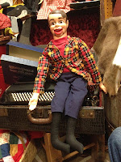

Antique mall vent finds
5/14/2012
{kind=link}
{kind=link}

Question: There is an antique mall near my work which I'll often troll on my lunch hour. I'm always hoping I'll discover some cool vent stuff, but never do, until yesterday I found both a vintage Danny O'Day and Charlie McCarthy. Danny is in great shape except for the mouth needing a new rubber band (and no shoes.) They priced him at $135. Is that a bit high? Charlie is worse off with a completely detached arm and jaw and, of course, missing hat and monocle--the first to go (...and those brown shoes are doing terrible things to that tuxedo.) He's marked $75. I know with enough looking I could probably find a deal on mint versions online, but there's something intriguing about having them cross my path in person. Just wondering if these prices are too much for the state they are in. ~Ted* * * *
From Mr D: At this point in time, these two dolls really have very little extra value due to their age, if any at all. So if all you want is a basic ventriloquist doll, you need to compare their prices to the prices of a new doll of the same character. If they are stuffed body (and I assume they are) you can get a new basic style Danny or Charlie for $55 (ThrowThings.com) . I certainly would not recommend you pay more than that for either of these you found in the antique store.
I would not pay over $35 myself, since I only buy such dolls to convert and upgrade them, and $35 is about the current price of Goldberger dolls wholesale in quantity - and it's easier to start with a new doll than a used one...However, the price you see is not far off from what I've seen on similar dolls in antique shops in the Denver area. The dealer may find a buyer willing to pay that or slightly less. Personally, I just smile, shake my head, and walk on by...